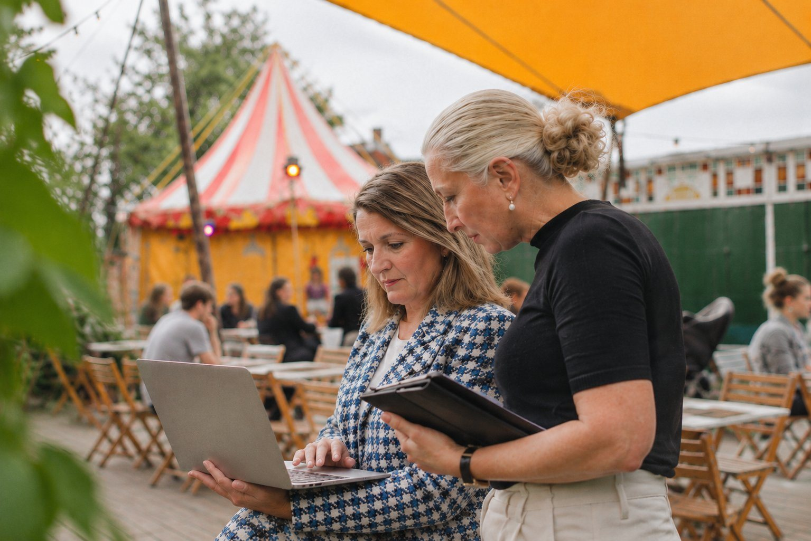
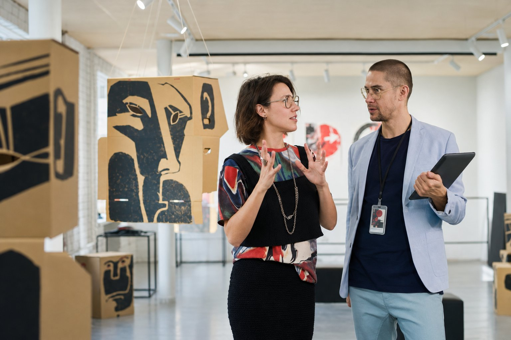

Voor wie we werken
Voor wie is HEAR

Eventmanagers en communicatieprofessionalsDie namens hun werkgever of opdrachtgever een netwerkdag, seminar of zakelijke borrel organiseren.Wat we voor je doen →
Merken, creatieven en bureausDie een merkactivatie, productlancering, collectiepresentatie, modeshow of in-store event organiseren.Wat we voor je doen → Organisatoren van (dance) eventsPromotors of andere ondernemers die een feest met dj's en artiesten organiseren.Wat we voor je doen →
Organisatoren van (dance) eventsPromotors of andere ondernemers die een feest met dj's en artiesten organiseren.Wat we voor je doen → Eigenaren en exploitanten van eventlocatiesDie steeds een andere klant moeten servicen: vandaag een modeshow, morgen een seminar, overmorgen een bedrijfsfeest met dj.Wat we voor je doen →
Eigenaren en exploitanten van eventlocatiesDie steeds een andere klant moeten servicen: vandaag een modeshow, morgen een seminar, overmorgen een bedrijfsfeest met dj.Wat we voor je doen →